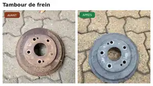

Tambour de frein
Brake drum
Retrait de corrosion de surface sur une pièce automobile.
Surface corrosion removal on an automotive part.
Enlèvement ciblé de rouille, oxydation, peinture, carbone et contaminants. Une solution précise pour la restauration, la préparation avant soudure et l’entretien de pièces de valeur.
Targeted removal of rust, oxidation, paint, carbon and surface contamination. A precise option for restoration, weld preparation and maintenance of valuable parts.

Avant/après provenant de nos propres essais de nettoyage au laser.
Before/after from our own laser-cleaning testing.
Photos de nos propres essais. Le résultat dépend du métal, de la corrosion, du revêtement et des paramètres utilisés.
Photos from our own testing. Results vary with the metal, corrosion, coating and process settings.
Retrait de corrosion de surface sur une pièce automobile.
Surface corrosion removal on an automotive part.

Nettoyage localisé d’une zone rouillée sans traiter inutilement toute la pièce.
Localized rust removal without unnecessarily treating the entire part.

Nettoyage ciblé de rouille sur l’acier d’une remorque.
Targeted rust removal on trailer steel.
Particulièrement intéressant lorsqu’il faut traiter une zone précise sans projeter de sable ou appliquer un décapant chimique sur toute la pièce.
Useful when a specific area needs treatment without blasting media or chemical stripper across the entire part.
Corrosion de surface sur pièces, structures et équipements métalliques.
Surface corrosion on metal parts, structures and equipment.
Décapage localisé lorsque le procédé est compatible avec le substrat.
Localized coating removal where compatible with the substrate.
Nettoyage ciblé des zones à réparer ou à souder.
Targeted cleaning of areas to be repaired or welded.
Restauration et préparation de composantes mécaniques.
Restoration and preparation of mechanical components.
Cadres, supports, attaches et zones à préparer avant réparation.
Frames, brackets, hitches and repair-preparation areas.
Carbone, dépôts et contamination sur les surfaces compatibles.
Carbon, buildup and contamination on suitable surfaces.
Ce n’est pas la bonne méthode pour chaque surface. Là où elle convient, elle permet de concentrer le travail exactement là où il est nécessaire.
It is not the right process for every surface. Where suitable, it focuses the work exactly where needed.
Paramètres ajustables selon le matériau et l’objectif.
Adjustable settings based on substrate and objective.
Pas de sable ou grenaille à récupérer après le traitement.
No sand or blast media to recover afterward.
Traitez uniquement la zone qui en a besoin.
Treat only the area that needs it.
Envoyez-nous une photo de votre pièce rouillée, peinte ou contaminée. Nous vous dirons rapidement si elle semble être une bonne candidate pour le nettoyage au laser.
Send us a photo of your rusty, painted or contaminated part. We will quickly tell you whether it appears to be a good candidate for laser cleaning.
Comme tout procédé de préparation de surface, le résultat dépend du matériau et des paramètres. Nous validons l’application et faisons un essai lorsque nécessaire.
Results depend on the substrate and settings. We assess the application and test where necessary.
Non. Certains matériaux, finis et contaminants demandent une autre méthode. Nous évaluons la pièce avant de recommander le laser.
No. Some materials, finishes and contaminants require another method. We assess the part first.
Oui. Le service est mobile pour les applications compatibles dans notre zone de service.
Yes. Mobile service is available for suitable applications throughout our service area.
Envoyez-nous une photo et une courte description. Nous pouvons ensuite recommander un essai.
Send us a photo and short description. We can then recommend a test.